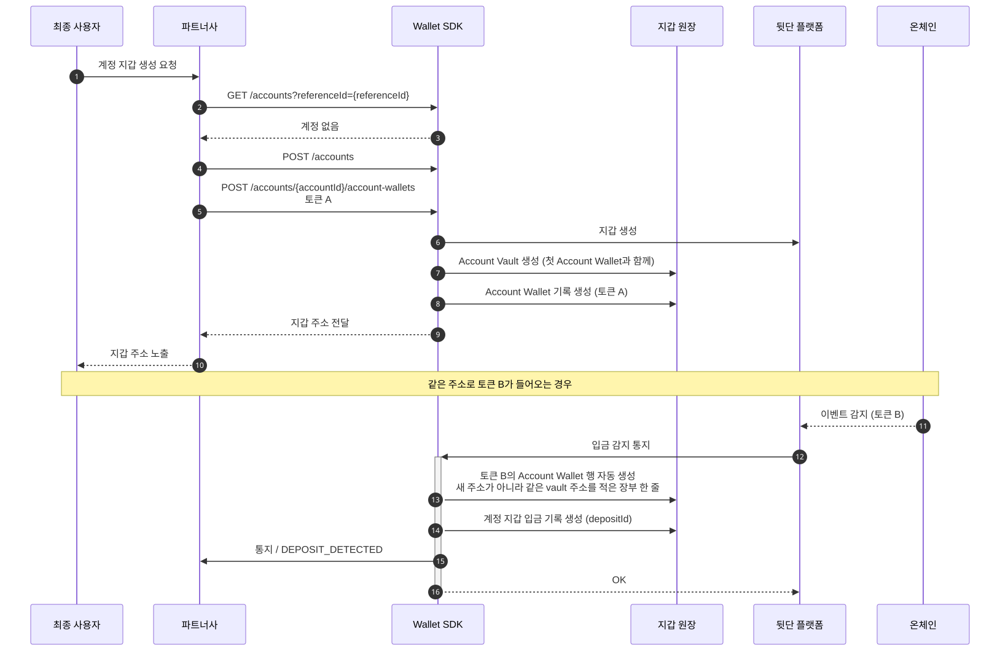
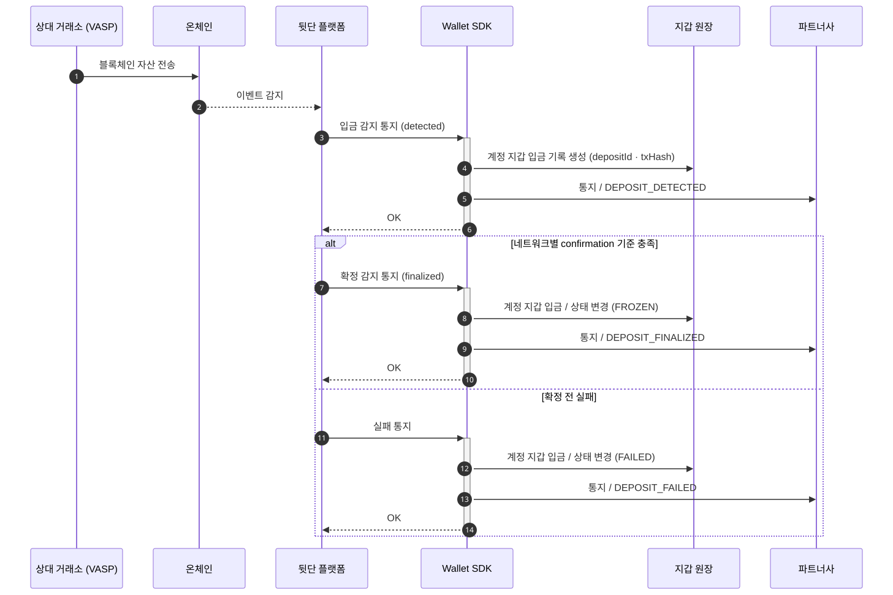
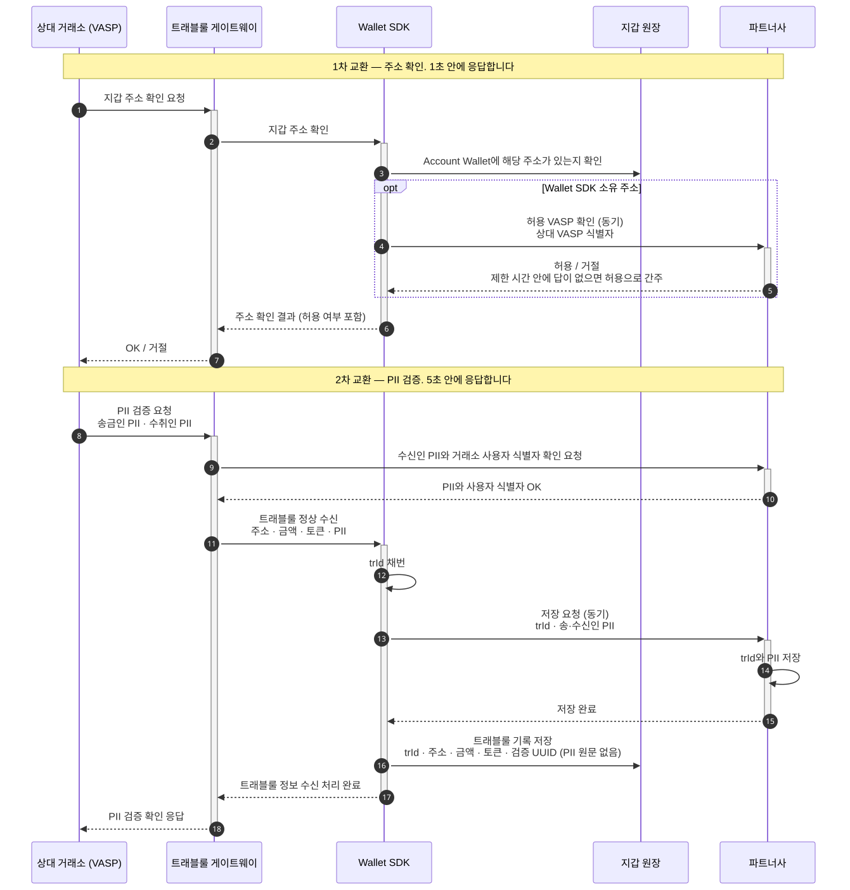
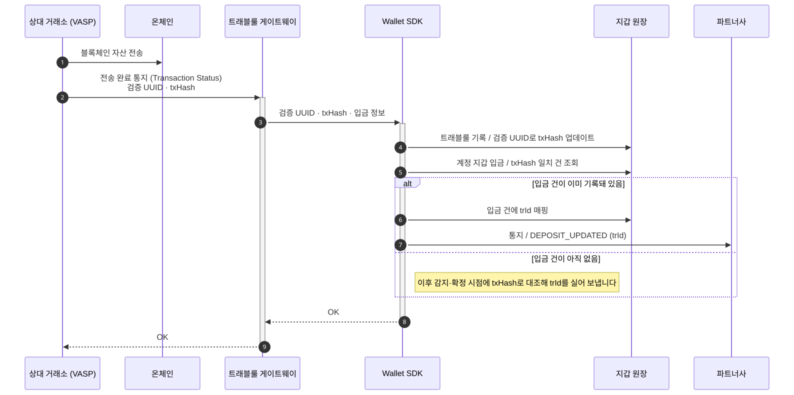
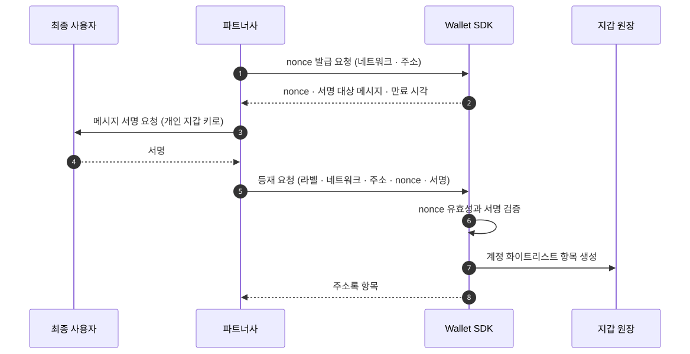
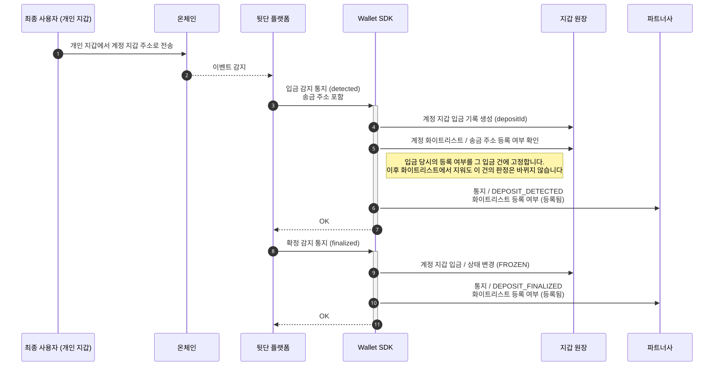
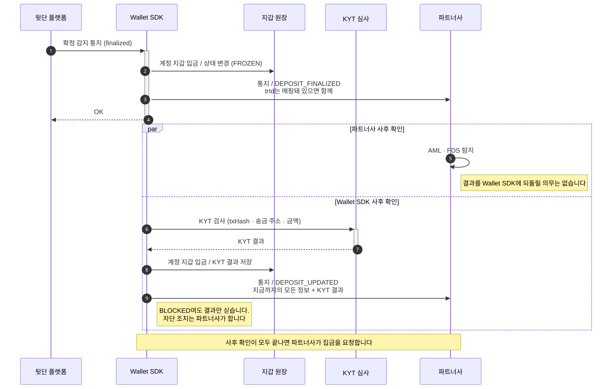
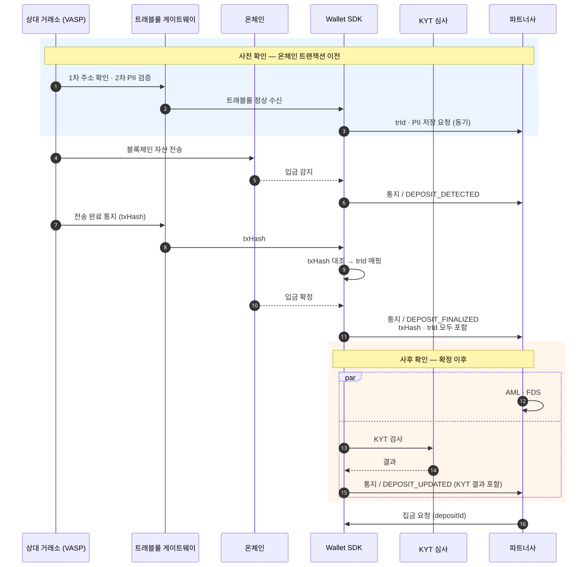
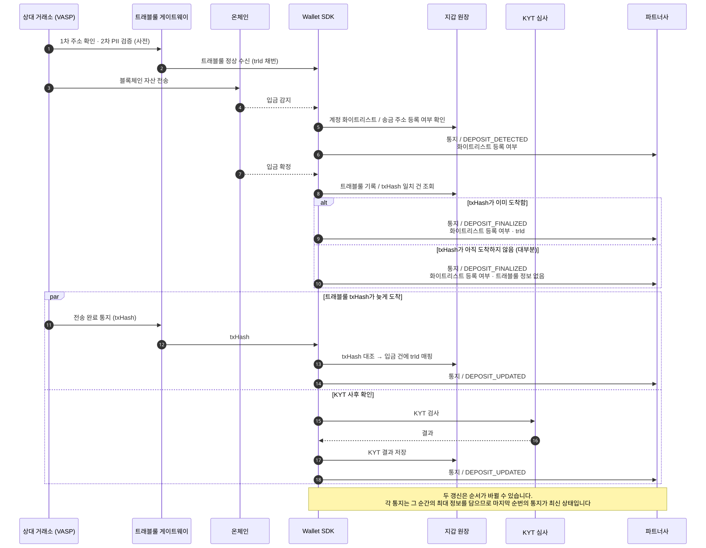

입금 (Deposit)
입금은 온체인에서 Wallet SDK 지갑으로 들어온 자금이고, 거부할 수 없습니다. 이 페이지는 계정 지갑을 만들어 주소를 건네는 데서 시작해 감지와 확정, 동결, 그리고 동결을 풀어도 되는지 판단하는 사전·사후 확인과 통지 순서까지를 설명합니다. 워크스페이스 지갑으로 들어오는 입금은 다루지 않습니다.
다이어그램에 등장하는 배역은 아홉입니다.
- 상대 거래소 (VASP): 최종 사용자가 자산을 보내오는 상대편 가상자산사업자입니다
- 최종 사용자: 파트너사 서비스를 쓰는 사람입니다
- 파트너사: Wallet SDK를 도입한 회사, 곧 Workspace 하나입니다
- Wallet SDK: 파트너 대상 API를 받아 정책 엔진에 판단을 묻고 서명 인프라에 제출하는 서버 컴포넌트입니다
- 지갑 원장: 지갑·입금·트래블룰·주소록 기록을 담는 Wallet SDK 쪽 저장소입니다
- 트래블룰 게이트웨이: 송·수신 정보를 사업자끼리 교환하는 트래블룰 경로를 중개합니다
- 뒷단 플랫폼: 지갑과 키를 보관하고 온체인 이벤트를 관측하는 외부 플랫폼입니다
- 온체인: 블록체인 네트워크입니다
- KYT 심사: KYT 검사를 수행하고 결과를 돌려주는 외부 심사입니다
입금 지갑 생성 시점
수취 측 입금 지갑은 송금 대상이 될 수 있도록 입금 시점에 미리 생성되어 있어야 합니다.
Wallet SDK 관점에서는 특정 Account에게 Account Vault 1개, 그리고 이와 연관된 최소 1개 이상의 Account Wallet이 생성되어 있어야 합니다.
Account Wallet은 Token 단위로 생성되기 때문에, EVM 주소가 할당된 상태에서도 특정 토큰의 Account Wallet은 생성되지 않은 상태일 수도 있습니다. 이 경우 자동으로 해당 Token의 Account Wallet이 생성됩니다.

지갑 행이 없어도 기록하는 이유는 주소 소유가 결국 키로 증명되기 때문입니다. Wallet SDK 주소는 모두 그 키에서 유도되므로 그 자금은 Wallet SDK가 처리할 수 있는 것입니다. 여기서 만들어지는 것은 새 주소가 아니라 이미 건넨 vault 주소를 적은 장부 한 줄입니다. 계정이 비활성이어도 같습니다. 자세한 것은 지갑 계층에 있습니다.
입금 기본 흐름
Travel Rule이나 KYT 같은 절차를 제외하면, 입금은 기본적으로 감지 이후 확정으로 진행되는 흐름으로 구성됩니다. 감지시와 확정 시 파트너사에 웹훅으로 각 이벤트를 통지하게 됩니다.

각 입금 건에는 식별자로 depositId가 발급됩니다. 기본 흐름에서 통지되는 이벤트는 블록체인으로부터 탐지하기 때문에 txHash 등의 값을 함께 통지합니다.
관측(DEPOSIT_DETECTED)은 온체인에서 트랜잭션을 봤다는 뜻이고, 아직 확정이 아니라 되돌려질 수 있습니다. 확정(DEPOSIT_FINALIZED)은 네트워크별 confirmation 기준을 넘겼다는 뜻입니다. 확정 전에 실패하면 DEPOSIT_FAILED가 나가고 거기서 끝나며, 확정된 입금은 실패로 되돌리지 않습니다.
입금된 자산의 기본 상태 : 동결
입금된 자산은 기본적으로 동결 상태로 입금 지갑에 머무르게 됩니다. 입금 지갑 자산의 동결 해제는 현재 워크스페이스 볼트(Workspace Vault)로의 스윕(Sweep) 뿐입니다.
해당 동결 자금이라는 것은 실제 온체인 상 동결 혹은 컨트랙트 상 동결이 아니라, Wallet SDK의 오프체인 DB에서 동결해두는 것을 의미합니다.

확정 시점의 도메인 상태는 동결(FROZEN)이지만 통지에는 FINALIZED로 나갑니다. 해제는 파트너사가 요청하는 흐름이라 동결 여부를 파트너사에게 보이는 상태 이름에 섞지 않습니다. 동결 자체는 자금 동결에 있습니다.
따라서 입금이 확정된 이후 적절한 절차를 거친 이후 해당 입금건의 동결을 풀어도 된다고 판단하면 Sweep을 요청해 워크스페이스 볼트로 자산을 온체인 송금한 뒤 유동적으로 활용합니다. 집금 요청 자체는 집금에 있습니다.
입금의 전체 과정에서 입금 사전(혹은 동시)에 확인할 수 있는 정보와 사후에 확인할 수 있는 정보를 나눠 기술하겠습니다.
동결 해제 사전 확인 조건
동결을 해제해도 되는 건인지, 즉 입금을 허용해도 되는 건인지 파악하기 위해서 사전 확인할 수 있는 정보는 송금인 식별 정보입니다.
송금인의 지갑이 어느 VASP의 어떤 고객인지 식별할 수 있도록 VASP 사업자 간에는 Travel Rule로 온체인 트랜잭션이 발생하기 이전에 송금인과 수취인의 개인 식별 정보를 교환하게 됩니다. 트래블룰 자체는 에코시스템이 설명합니다.
만약 TR 사전 정보가 없어 VASP 사업자가 관리하는 지갑임을 인지할 수 없을 경우, 개인 지갑으로부터 발생한 트랜잭션으로 간주합니다. 이 때, 파트너사가 아는 지갑인지 미리 Wallet SDK에 화이트리스트로 등록해두었다면 입금 통지시 화이트리스트 등록 정보를 제공받을 수 있습니다. 모두 해당하지 않는다면, 별도로 사유를 제출받아야 하는 입금건으로 간주할 수 있습니다.
사전 확인 조건이 만족될 경우 파트너사에서는 입금 기본 흐름에서 확정 통지에 관련 정보를 전달받게 됩니다.
VASP : Travel Rule
Travel Rule에는 2번의 정보 교환이 일어납니다.
첫 번째는 주소 교환으로, 상대 VASP가 파트너사 VASP에게 송금하려는 지갑의 주소가 파트너사 VASP의 것인지 묻는 절차입니다. Wallet SDK 내부적으로 Wallet SDK가 소유하고 있는 Account Wallet에 해당 지갑이 있는지 선제적으로 확인합니다.
만약 소유하고 있는 지갑일 경우 상대 VASP가 파트너사에서 허용하는 VASP인지 확인하기 위해 파트너사에 확인 동기 요청을 보내 허용 여부를 확인합니다. 파트너사가 제한 시간 안에 답하지 않으면 허용으로 간주합니다. 제한 시간 값은 아직 정해지지 않았습니다.
일련의 과정을 거쳐 상대 VASP에게 해당 송금건을 허용할 것인지 응답하게 됩니다.
이 1차 교환이 1초 안에 완료되어야 합니다.
두 번째는 PII 검증으로, 수취인과 송금인의 개인 식별 정보를 교환하는 과정입니다. 송금인의 PII와 수취인의 PII를 채워서 상대 VASP에서 파트너사 VASP에 요청하게 되고, Wallet SDK에서는 TR Gateway로 PII 정보를 파트너사에 전달하게 됩니다.
PII 확인이 완료되면 trId를 발급해 PII 정보와 함께 저장 동기 요청하게 되고, 파트너사에서는 해당 정보를 저장합니다. 저장이 완료된 이후에 상대 VASP 측으로 PII 검증 확인을 응답하게 됩니다. PII 원문은 Wallet SDK가 저장하지 않습니다. 트래블룰 게이트웨이에서 받은 값을 파트너사로 넘기고, 지갑 원장에는 식별자와 검증 UUID만 남깁니다.
이 2차 교환이 5초 안에 완료되어야 합니다.

Travel Rule 교환이 성공적으로 완료되면 해당 입금건은 양측 VASP는 기본적으로 문제 없는 자금 흐름으로 판단할 수 있게 됩니다. 이후 온체인 트랜잭션이 완료되고 나면 Transaction Status API로 tx hash 전달하게 되고, Wallet SDK가 입금 기본 흐름에서 인식한 tx hash와 대조하여 trId 와 입금건을 매핑하여 통지할 수 있는 상태가 됩니다. 그러면 해당 자금의 소유주가 기본적으로 확인되기 때문에 미등록 개인 지갑으로부터 발생한 트랜잭션과 다르게 일련의 사유 제출 절차를 생략할 수 있게 됩니다.

개인 지갑 : 화이트 리스트
VASP 사업자가 관리하는 지갑이 아닌 개인 지갑으로부터 발생한 트랜잭션일 경우 파트너사에서 해당 지갑이 사전에 등록된 지갑인지 사전에 파악할 수 있어야 합니다.
Wallet SDK에서는 이를 위해 화이트 리스트 기능을 제공합니다. 각 계정에 할당되는 화이트리스트는 기본적으로 지갑의 소유 증명으로 등록하게 됩니다. 표면은 계약 소유자와 인증 방식이 하나로 정해지는 API 경로 묶음입니다. 등재·회수 API 표면에서는 이 장부를 주소록이라 부릅니다(주소록).

따라서 화이트리스트에 존재하는 지갑 주소라면 특정 계정의 사용자 본인의 지갑으로 간주할 수 있습니다. 본인의 지갑으로부터 발생하는 입금건임이 확인이 된다면 일련의 사유 제출 절차를 생략할 수 있게 됩니다.

그 외 : 직접 사유 제출
이외의 케이스는 알 수 없는 지갑으로부터 발생한 트랜잭션으로 간주해야 합니다. 따라서 반환 절차 등의 프로세스를 마련하여 사용자 혹은 고객이 직접 본인의 자금 흐름임을 사유로 제출해 동결을 해제하는 등 운영성 정책의 마련이 필요합니다.
Travel Rule 교환이 있었더라도 상대 VASP의 tx hash 통지가 끝내 오지 않으면 trId 매핑이 붙지 않습니다. 그런 건은 Wallet SDK 입장에서 알 수 없는 개인 지갑으로부터의 입금과 구분할 수 없으므로, 파트너사도 이 케이스로 다루면 됩니다. 매핑을 기다리는 기한은 따로 두지 않습니다.
동결 해제 사후 확인 조건
사전 조건을 만족했다면 입금건을 집금(Sweep) 처리(동결 해제 + 이동)하기 위해 사후 확인을 진행하게 됩니다. 파트너사에서 일련의 AML/FDS 탐지 과정을 거치고, Wallet SDK에선 KYT 과정을 거치게 됩니다.

AML·FDS는 파트너사가 자기 책임으로 수행하고 결과를 Wallet SDK에 되돌릴 의무가 없습니다. KYT 결과가 BLOCKED여도 Wallet SDK는 결과를 통지에 담기만 하고, 그 입금을 원장에 반영하지 않거나 반환하는 조치는 파트너사가 합니다. 차단을 Wallet SDK 기록에 반영하는 표면은 없습니다.
Wallet SDK에선 역시나 KYT 과정이 완료되면 입금 관련 이벤트로 지금까지의 모든 상태와 더불어 최신 상태를 파트너사로 통지하게 됩니다. 아래는 그 통지의 예시이고, travelRule과 kyt 안의 필드 이름은 확정된 계약이 아니라 형태를 보이기 위한 예시입니다.
{
"eventType": "DEPOSIT_UPDATED",
"correlationKey": "awd-1234567890abcdef:DEPOSIT_UPDATED:2",
"depositId": "awd-1234567890abcdef",
"workspaceId": "ws-...",
"tenantId": "tn-...",
"status": "FINALIZED",
"accountId": "acc-...",
"accountWalletId": "aw-...",
"tokenId": "tok-...",
"amount": "100.00",
"amountRaw": "100000000",
"txHash": "0x...",
"sourceAddress": "0x...",
"sourceRegistered": false,
"travelRule": {
"trId": "tr-...",
"counterpartyVaspId": "vasp-..."
},
"kyt": {
"result": "PASS",
"checkedAt": "2026-09-08T10:12:00+09:00"
}
}travelRule과 kyt는 그 시점에 확인된 것만 들어가고, 아직 없으면 null입니다. correlationKey 끝의 숫자는 그 입금 건의 갱신 순번이고, 갱신 통지마다 1씩 오릅니다.
통지된 정보를 활용하여 사후 확인까지 완료하고 나면 정상 입금건임을 최종적으로 확인할 수 있게 됩니다.
사전 / 사후로 나눠서 보는 전체 흐름도
지금까지 이야기한 흐름도를 사전 / 사후로 명확히 나눠 기술하면 다음과 같이 볼 수 있습니다.

하지만 현실은 생각보다 녹록치 않은데, 일단 Travel Rule의 조건 때문입니다.
Travel Rule의 현실, 개인 지갑 구분, 그리고 해결책
Travel Rule을 두고 FATF가 낸 권고는 사실상 사후 전송만 아니면 된다에 가깝습니다. 또한 트래블룰 게이트웨이를 거쳐 기대하는 케이스대로 들어온다고 하더라도 상대 VASP 측에서도 온체인 확정을 감지한 후 tx hash를 통지해줄 것이기 때문에 Wallet SDK에서 먼저 온체인 입금 확정을 감지할 확률이 높습니다.
즉, 대부분은 입금 확정시에 TR 정보를 매핑하는 것이 어렵습니다.
순서가 보장되지 않는 상황에서 Wallet SDK가 보장할 수 있는 유일한 기준은 직접 감지하는 온체인 이벤트로 보는 것이 바람직합니다. 따라서 Travel Rule 교환 규칙과 무관하게 다음 흐름으로 처리합니다.
- Travel Rule 정보 교환은 온체인 트랜잭션과 무관하게 발생합니다.
- 입금 감지 이벤트는 온체인에서 Wallet SDK 지갑으로의 입금이 감지되면 통지합니다.
- (개인 지갑 대응 추가) 이 때, 송금 발생 주소가 화이트 리스트에 등록 되었는지 여부를 함께 통지합니다.
- 입금 확정 이벤트는 온체인에서 입금이 확정되면 통지합니다.
- (Optional) TR 정보 교환으로
trId매핑이 완료되었을 경우 함께 통지합니다.
- (Optional) TR 정보 교환으로
- 입금 확정 이후 입금건의 정보 변경이 발생할 때 마다 그 순간의 최대 정보를 포함하여 입금 갱신 통지(
DEPOSIT_UPDATED)합니다.- TR 정보 교환으로
trId매핑이 완료되었을 경우trId를 포함하여 통지합니다. - KYT 확인이 완료되었을 경우 KYT 결과를 포함하여 통지합니다.
- TR 정보 교환으로

따라서 파트너사에서는 각 통지 시점마다 상태를 최신화하여 입금의 진행 상태를 판단할 수 있습니다.